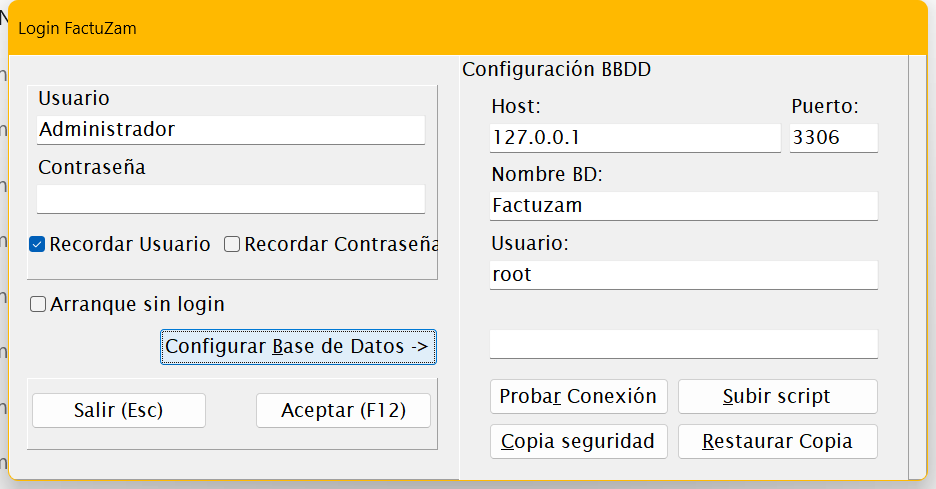
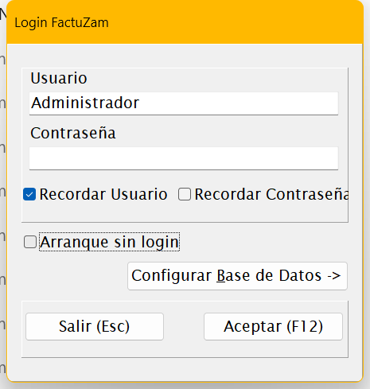

09 · Instalación en Windows
Este capítulo describe cómo instalar Factuzam en un equipo Windows desde cero: el servidor de base de datos, la base de datos inicial y la aplicación. Está orientado al instalador/administrador; el usuario final solo necesita el capítulo 00 · Acceso y primeros pasos.
1. Requisitos
| Componente | Requisito |
|---|---|
| Sistema operativo | Windows 10 / Windows 11 (también Windows Server para el equipo que aloje la base de datos). |
| Base de datos | MariaDB (compatible MySQL). Puede instalarse en el mismo equipo o en un servidor de la red local. |
| Aplicación | fzam.exe — es un ejecutable autónomo, no requiere instalador ni librerías adicionales. |
| Red | Si hay varios puestos, todos deben ver el servidor MariaDB por TCP (puerto 3306 por defecto). |
| Periféricos (TPV) | Impresora de tickets y lector de códigos de barras (teclado/USB-HID); ambos opcionales fuera de Caja. |
2. Instalar el servidor MariaDB
- Descarga MariaDB para Windows desde
mariadb.org/download e instálalo en el equipo que hará de servidor (en monopuesto, el mismo PC).
- Durante la instalación:
- Define la contraseña de
rooty guárdala en lugar seguro. - Deja el servicio configurado para arrancar con Windows.
- Puerto por defecto: 3306.
- Si otros puestos van a conectarse, abre el puerto 3306 en el **firewall
de Windows** del servidor (solo para la red local).
Factuzam usa el juego de caracteres
utf8mb4con cotejamientoutf8mb4_spanish_ci; la base de datos se creará así en el paso siguiente.
3. Crear la base de datos inicial
La base de datos modelo se distribuye en el fichero
factuzam_original.sql (esquema completo + datos de sistema:
países, tipos de IVA, ventanas, usuario inicial…).
Opción A — desde la propia aplicación (recomendada):
- Crea primero la base de datos vacía. Desde una consola del servidor:
``sql
CREATE DATABASE factuzam
CHARACTER SET utf8mb4
COLLATE utf8mb4_spanish_ci;
``
- Arranca
fzam.exey, en el login, pulsa
Configurar Base de Datos ▸ y rellena Host, Puerto, Nombre BD
(factuzam), Usuario y Contraseña.
- Pulsa el botón Subir Script: pide la contraseña de la base de
datos y un fichero .sql; selecciona factuzam_original.sql y espera
a que termine la carga.
- Pulsa Probar Conexión para verificar.

▢ Captura pendiente — Panel Configuración BBDD con el botón de carga de script.Opción B — por línea de comandos:
mysql -h localhost -P 3306 -u root -p ^
-e "CREATE DATABASE factuzam CHARACTER SET utf8mb4 COLLATE utf8mb4_spanish_ci;"
mysql -h localhost -P 3306 -u root -p factuzam < factuzam_original.sql(También sirve cualquier cliente gráfico: HeidiSQL, DBeaver…)
Usuario de base de datos dedicado (recomendado): evita usar root
desde los puestos; crea un usuario propio para la aplicación:
CREATE USER 'fzam'@'%' IDENTIFIED BY 'una_clave_segura';
GRANT ALL PRIVILEGES ON factuzam.* TO 'fzam'@'%';
FLUSH PRIVILEGES;4. Instalar la aplicación en cada puesto
- Crea una carpeta, por ejemplo
C:\Factuzam\, y copia en ella
fzam.exe.
- Crea un acceso directo en el escritorio/menú inicio.
- Arranca la aplicación y en el login pulsa
Configurar Base de Datos ▸; introduce:
| Campo | Valor |
|---|---|
| Host | IP o nombre del servidor MariaDB (localhost en monopuesto). |
| Puerto | 3306 (salvo que se cambiara). |
| Nombre BD | factuzam. |
| Usuario / Contraseña | El usuario de BBDD creado en el paso 3. |
- Pulsa Probar Conexión — debe responder correctamente.
La configuración se guarda por usuario de Windows en
%LOCALAPPDATA%\factuzam\(fichero.ini). Cada puesto se configura una sola vez.
5. Primer inicio de sesión
- Usuario inicial:
Administrador(grupo Administradores), con la
contraseña suministrada con la instalación.
- Tras entrar, cambia la contraseña del administrador y crea los
usuarios reales en Otros ▸ Usuarios, Grupos y Perfiles.

▢ Captura pendiente — Primer login como Administrador.6. Lista de comprobación de puesta en marcha
Configura en este orden antes de empezar a trabajar:
- Empresa — datos fiscales, NIF, series de facturación y
certificado Verifactu (Archivo ▸ Empresas).
- Impuesto IVA y Grupos de IVA — verifica los tipos vigentes
(Otros ▸ Impuesto IVA).
- Contadores — numeración inicial de los documentos por serie
(Otros ▸ Contadores).
- Almacenes y Cajas — al menos un almacén y su caja de venta
(Archivo ▸ Almacenes).
- Formas de pago (general y de caja).
- Tablas auxiliares y catálogo — familias, tallas/atributos,
tarifas y artículos (Archivo ▸ Tablas Auxiliares; o mediante la migración desde el software anterior).
- Usuarios, grupos y permisos — un usuario por persona, permisos
por grupo.
- Parámetros de Caja — impresora de tickets y comportamiento del TPV
(Caja ▸ Parámetros de Caja).
- Copia de seguridad — haz una primera copia y deja establecida la
rutina (Otros ▸ Hacer Copia de Seguridad).
7. Ficheros locales de la aplicación
Cada puesto guarda sus datos locales en %LOCALAPPDATA%\factuzam\:
| Carpeta / fichero | Contenido |
|---|---|
fzam.ini | Configuración del puesto (conexión, usuario recordado…). |
log\ | Ficheros de log de la aplicación (útiles para soporte). |
tickets\ | Tickets generados por el TPV. |
Estos ficheros son por usuario de Windows y no contienen los datos de negocio (que viven todos en MariaDB).
8. Actualizaciones
- Actualizar la aplicación consiste en sustituir
fzam.exepor la
versión nueva (con la aplicación cerrada en todos los puestos).
- Si la versión incluye cambios de esquema de base de datos, se
entregan como scripts SQL idempotentes que se aplican una sola vez sobre la base de datos (pueden cargarse con el botón Subir Script del login). Sigue las instrucciones de cada versión.
- Comprueba la versión instalada en Ayuda ▸ Acerca de.
Antes de actualizar, haz copia de seguridad de la base de datos.
◀ Menú Ayuda · Índice · Siguiente ▶ Migración desde software legacy